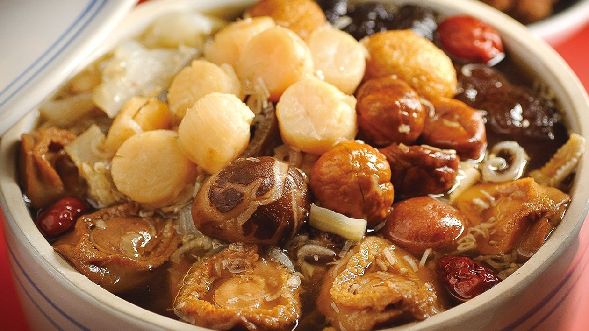
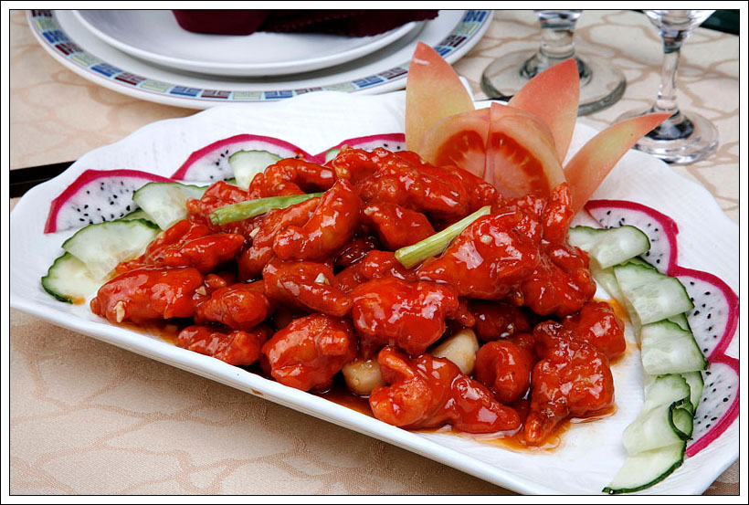
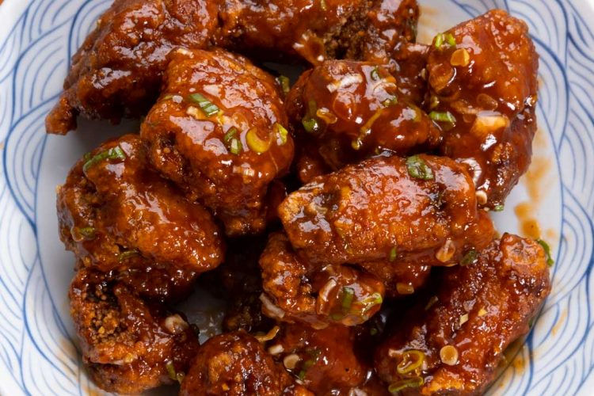

🍛 代表菜色介紹

佛跳牆
佛跳牆是閩菜中最具盛名的湯品，採用多種珍貴食材如鮑魚、海參、花膠、鵝掌等，經長時間燉煮而成。湯頭濃郁鮮美，香氣撲鼻，據說香氣能讓佛陀都跳牆而來品嘗，寓意極佳。

荔枝肉
荔枝肉選用豬里脊肉，切成球狀炸至外酥內嫩，再裹上酸甜汁，外觀紅潤似荔枝果，酸甜口感與酥脆口感完美結合，是閩南著名的經典佳餚。

醉排骨
醉排骨將排骨裹粉炸至金黃酥脆，拌入酸甜酒香醬汁，味道濃郁且酒香撲鼻，兼具酥香與柔嫩，是閩菜獨特的酒香風味代表。

沙茶麵
沙茶麵使用閩南地區特有的沙茶醬製作湯底，搭配彈牙的麵條和豐富配料，口感香辣鮮美，是當地居民喜愛的特色小吃。